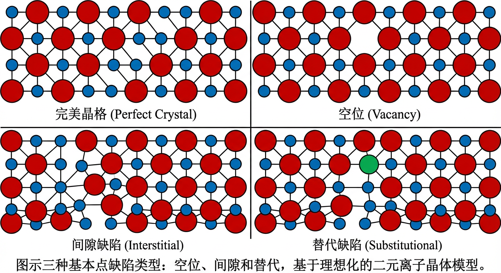
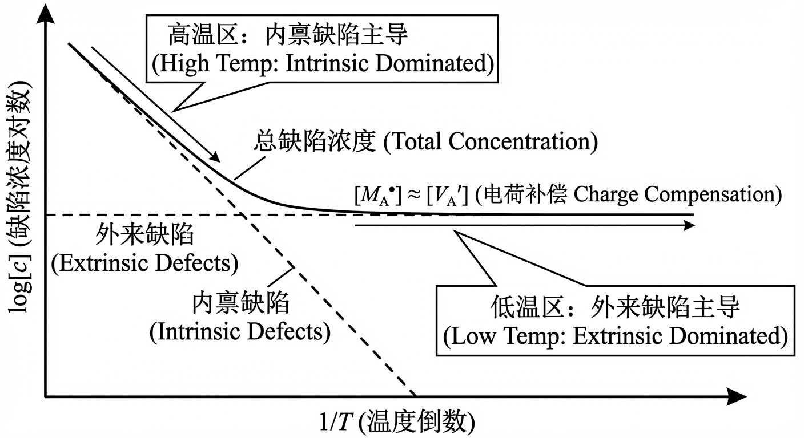
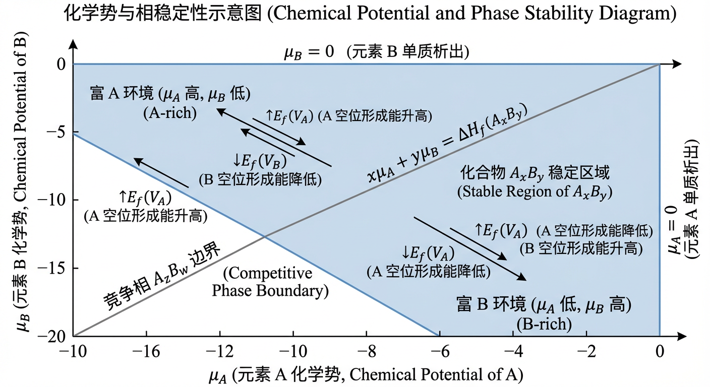
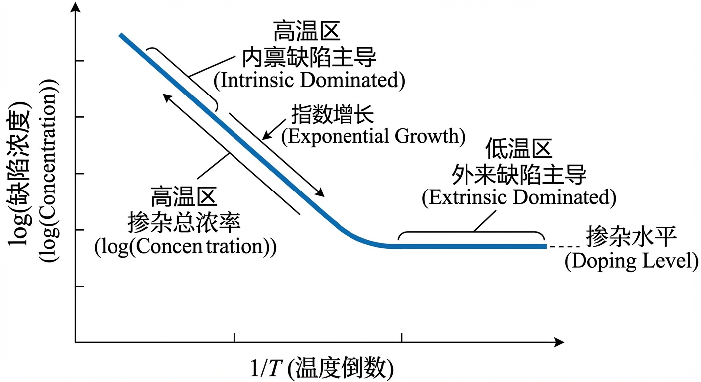
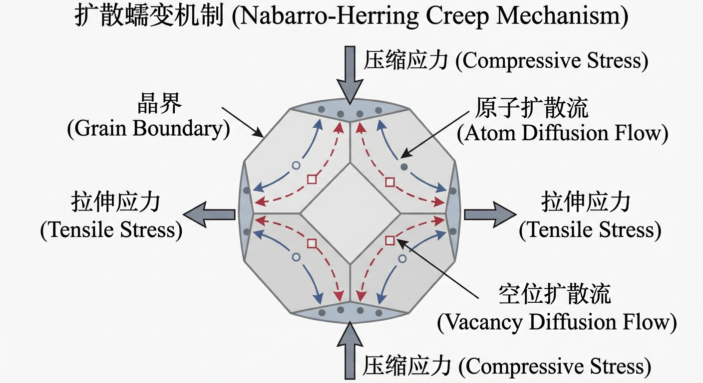
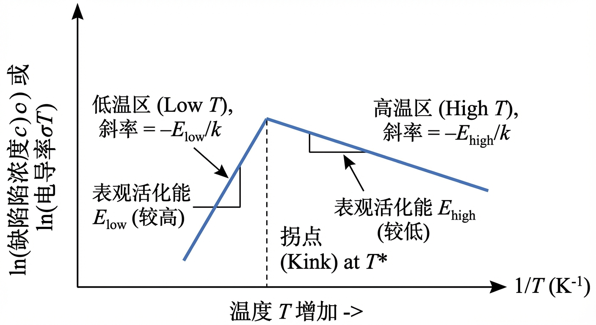
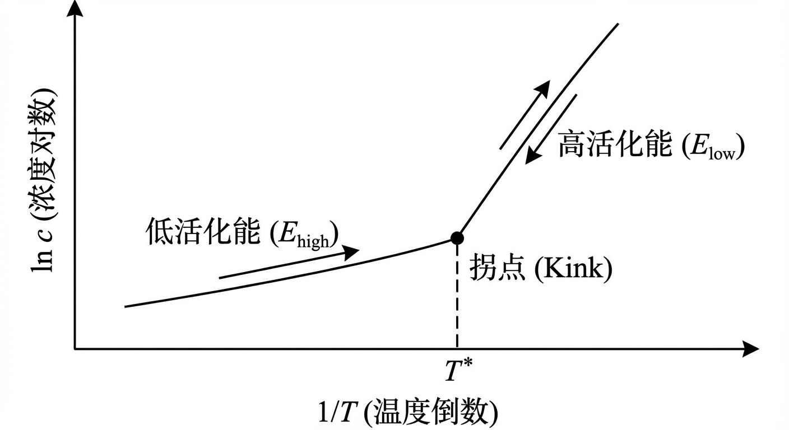

在材料科学的宏伟蓝图中，完美的晶体结构更像是一个理想化的理论模型，而非普遍存在的现实。在任何非零温度下，所有晶体材料内部都不可避免地存在着偏离理想周期性排列的原子，即“缺陷”。在这些缺陷中，最基本、最普遍的一类便是点缺陷——尺度仅限于单个原子位置的零维不完美性。尽管它们微不足道，但这些微观的扰动却对材料的电学、光学、力学乃至化学性质产生着决定性的影响，是连接原子尺度结构与宏观功能的关键桥梁。然而，理解这些缺陷的行为、预测它们的浓度并掌握其影响，需要一个坚实的理论框架。
本文旨在为读者系统性地构建这一框架，深入剖析固态晶体中点缺陷的核心世界。我们将带领读者穿越三个循序渐进的章节，从基本原理到实际应用，全面掌握这一关键概念：
在第一章 “原理与机制” 中，我们将建立点缺陷的基础知识体系。读者将学习如何对缺陷进行分类，掌握描述它们的精确语言——克勒格-文克记法，并深入探索驱动内禀缺陷（肖特基与弗伦克尔缺陷）自发形成的热力学原理及其能量学根源。
接下来的第二章 “应用与跨学科连接” 将理论与实践相结合，展示点缺陷如何在离子电导、固态电池、高温蠕变和辐照损伤等多样化的现实场景中扮演核心角色，揭示其在材料科学、物理、化学等多个学科中的广泛影响。
最后的第三章 “动手实践” 将通过一系列精心设计的问题，引导读者运用所学知识解决具体问题，从而将在理论学习中获得的理解转化为实际的分析与计算能力。
通过本章的学习，我们将首先进入点缺陷的微观世界，为其复杂的行为建立起坚实的理论基础。
在任何非零温度下，完美的晶体周期性都会受到热力学驱动的扰动，从而产生缺陷。在本章中，我们将深入探讨点缺陷的基本原理和机制。点缺陷是零维的晶格不完美性，其空间尺度与单个原子或晶格位置相当。尽管它们尺寸微小，但点缺陷对固体的电学、光学、力学和扩散性质具有深远的影响。我们将从点缺陷的基本分类开始，引入描述它们的标准化语言，然后系统地探讨其形成的热力学和动力学机制。
点缺陷主要分为三种基本类型：空位 (vacancy)、间隙 (interstitial) 和 替代 (substitutional) 缺陷。为了清晰地理解这些概念，我们可以考虑一个理想化的二元离子晶体，例如具有岩盐结构的 $A^{+}B^{-}$ 型固体（如氯化钠 $\mathrm{NaCl}$），其中阳离子和阴离子各自占据着互穿的面心立方（FCC）亚晶格 。
空位 是指晶格中一个本应被原子或离子占据的位置出现了空缺。在我们的 $A^{+}B^{-}$ 晶体中，如果一个 $A^{+}$ 离子从其晶格位置上移除，就形成了一个阳离子空位。同样，移除一个 $B^{-}$ 离子则形成一个阴离子空位。空位的形成在拓扑上移除了一个晶格节点，并会降低晶体的宏观密度。
间隙缺陷 是指一个额外的原子或离子占据了晶体中通常不被占据的位置，即间隙位置 (interstitial site)。在岩盐结构中，所有八面体空隙都已被离子占据，成为晶格的常规位置。因此，可供额外离子占据的最小间隙位置是四面体空隙。一个额外的 $A^{+}$ 离子挤入四面体间隙就形成了一个阳离子间隙缺陷。由于阴离子通常比阳离子尺寸大得多，阴离子间隙缺陷在能量上非常不利，因此更为罕见。
替代缺陷 是指一个外来（杂质）原子或离子占据了主体晶格中的一个常规位置。例如，在一个 $A^{+}B^{-}$ 晶体中，一个二价阳离子 $M^{2+}$ 可能会替代一个 $A^{+}$ 离子。这类缺陷通常是通过在晶体生长或后续处理过程中有意或无意地引入杂质（掺杂）而产生的。

为了精确地描述点缺陷及其相互作用，我们需要一种能够清晰表示其电荷状态的语言。在离子或共价晶体中，一个缺陷的电荷状态不是其绝对电荷，而是相对于其所在位置在完美晶格中的电荷状态的差异。这个相对电荷被称为有效电荷 (effective charge) 。
有效电荷的计算公式为： $($缺陷物种占据该位置时的电荷$) - ($完美晶格中该位置上物种的电荷$)$
Kröger-Vink 记法 (Kröger-Vink Notation, KVN) 是描述点缺陷的标准化表示法，其通用形式为 $M_S^C$ ： - $M$ 代表占据该位置的物种。它可以是主体元素（如 $A$ 或 $B$）、杂质元素（如 $M$）或空位 ($V$)。 - $S$ 是下标，代表该物种所占据的晶格位置。它可以是阳离子晶格位置（如 $A$）、阴离子晶格位置（如 $B$）或间隙位置 ($i$)。 - $C$ 是上标，代表有效电荷。一个点（$\bullet$）表示一个单位的正有效电荷，一撇（$\prime$）表示一个单位的负有效电荷，而一个叉（$\times$）表示零有效电荷（即电中性）。
让我们用 Kröger-Vink 记法来描述 $A^{+}B^{-}$ 晶体中的缺陷： - 完美晶格：一个 $A^{+}$ 离子占据一个阳离子位点，其有效电荷为 $(+1) - (+1) = 0$，记为 $A_A^\times$。同样，一个 $B^{-}$ 离子占据一个阴离子位点，记为 $B_B^\times$。 - 空位：移除一个 $A^{+}$ 离子形成一个阳离子空位 $V_A$。该位置现在是空的（电荷为0），因此其有效电荷为 $0 - (+1) = -1$。记为 $V_A^\prime$。类似地，移除一个 $B^{-}$ 离子形成的阴离子空位 $V_B$ 的有效电荷为 $0 - (-1) = +1$，记为 $V_B^\bullet$。 - 间隙缺陷：一个间隙位置在完美晶格中是空的，因此其参考电荷为 0。当一个 $A^{+}$ 离子占据该位置时，其有效电荷为 $(+1) - 0 = +1$，记为 $A_i^\bullet$。 - 替代缺陷：当一个二价杂质离子 $M^{2+}$ 替代一个 $A^{+}$ 离子时，该缺陷记为 $M_A$。其有效电荷为 $(+2) - (+1) = +1$，记为 $M_A^\bullet$。
这个强大的记法构成了缺陷化学 (defect chemistry) 的基础，它允许我们将缺陷的形成和相互作用写成类似于化学反应的平衡方程，并要求这些方程在质量、晶格位置和有效电荷三方面都保持平衡。
在任何高于绝对零度的温度下，由于熵的贡献，晶体中总会自发地形成一定浓度的点缺陷。这些在纯净晶体中由热力学驱动产生的缺陷称为内禀缺陷 (intrinsic defects)。在离子晶体中，为了维持整体的电中性，这些缺陷通常成对出现。两种最主要的内禀缺陷类型是肖特基无序和弗伦克尔无序 。
肖特基缺陷 (Schottky defect) 由一对化学计量比的阳离子空位和阴离子空位组成。例如，在 $\mathrm{NaCl}$ ($A^{+}B^{-}$ 型) 晶体中，一个肖特基缺陷对包含一个钠离子空位 ($V_{\mathrm{Na}}^\prime$) 和一个氯离子空位 ($V_{\mathrm{Cl}}^\bullet$)。这种缺陷的形成可以看作是将晶体内部的一个中性化学式单元（如 "$\mathrm{NaCl}$"）转移到晶体表面，从而在体相中留下空位对。
使用 Kröger-Vink 记法，肖特基缺陷的形成反应可以写成两种形式。一种是简化的体相反应式，其中 $\varnothing$ 代表完美的晶格： $$ \varnothing \rightleftharpoons V_A^\prime + V_B^\bullet $$ 这个表达式强调了在体相中生成了等量的、带相反有效电荷的空位，从而保持了电中性。
另一种更完整的表达式明确地体现了与晶体表面的物质交换 ： $$ \mathrm{Na_{Na}^{\times}} + \mathrm{Cl_{Cl}^{\times}} \rightleftharpoons V_{\mathrm{Na}}^{\prime} + V_{\mathrm{Cl}}^{\bullet} + \mathrm{NaCl}{(\text{surf})} $$ 这里，$\mathrm{Na$ 代表完美的}^{\times}}$ 和 $\mathrm{Cl_{Cl}^{\times}晶格位点，而 $\mathrm{NaCl}_{(\text{surf})}$ 表示在晶体表面形成的一个新的、电中性的 $\mathrm{NaCl}$ 单元。这个反应清晰地表明，肖特基缺陷的形成保持了晶体的化学计量比，但由于从体相中移除了原子，它会导致晶体密度的降低。
弗伦克尔缺陷 (Frenkel defect) 由一个空位和一个同种离子的间隙缺陷组成。它通常发生在阳离子身上，因为阳离子尺寸较小，更容易挤入间隙位置。当一个阳离子离开其正常的晶格位置，并迁移到附近的一个间隙位置时，就形成了一个阳离子弗伦克尔对 (cation Frenkel pair)。
其形成反应可以写作： $$ A_A^\times \rightleftharpoons V_A^\prime + A_i^\bullet $$ 在这个过程中，一个在 $A$ 位点上的中性 $A$ 离子 ($A_A^\times$) 转变为一个带负有效电荷的空位 ($V_A^\prime$) 和一个带正有效电荷的间隙离子 ($A_i^\bullet$)。总的有效电荷变化为零，保持了电中性。由于没有原子离开晶体，弗伦克尔缺陷的形成基本不改变晶体的宏观密度。
在给定的晶体中，哪种类型的内禀缺陷（肖特基或弗伦克尔）占主导地位，取决于其形成能 (formation energy) 的相对大小。形成能越低的缺陷类型，在热平衡时其浓度就越高。缺陷形成能受到多种因素的复杂影响，包括离子尺寸、晶体结构、配位数以及化学键的性质。
一个经典的例子是 $\mathrm{NaCl}$ 和 $\mathrm{AgCl}$ 的对比 。两者都具有岩盐结构，但 $\mathrm{NaCl}$ 主要表现为肖特基无序，而 $\mathrm{AgCl}$ 则以阳离子弗伦克尔无序为主。单纯从离子半径来看，这一现象似乎有悖常理，因为 $\mathrm{Ag}^{+}$ 离子（八面体配位半径 $1.15\,\mathrm{\AA}$）甚至比 $\mathrm{Na}^{+}$ 离子（$1.02\,\mathrm{\AA}$）还要大。
解释这一现象的关键在于超越简单的刚性球模型，考虑离子的电子结构和化学键特性： - 对于 $\mathrm{NaCl}$：$\mathrm{Na}^{+}$ 具有稀有气体电子构型，表现为“硬”且不易极化的离子。将一个 $\mathrm{Na}^{+}$ 离子强行塞入岩盐结构中狭小的四面体间隙位置会引起巨大的晶格畸变和短程排斥力，导致极高的能量代价。相比之下，同时形成一个阳离子空位和一个阴离子空位的能量成本要低得多。因此，在 $\mathrm{NaCl}$ 中，肖特基缺陷的形成能远低于弗伦克尔缺陷。
此外，晶格的宏观介电性质也对缺陷形成能有重要影响 。晶体作为一个介电常数为 $\varepsilon$ 的连续介质，会屏蔽内部带电粒子（如此处的带有效电荷的缺陷）之间的库仑相互作用。根据克劳修斯-莫索提关系，构成晶体的离子的微观电子极化率 (polarizability) $\alpha$ 越高，宏观的介电常数 (dielectric constant) $\varepsilon$ 也越大。更高的介电常数意味着更强的屏蔽效应，这会有效稳定带电缺陷，降低其静电形成能。例如，在卤化物盐系列中，从氟化物到碘化物，由于阴离子极化率的增加 ($\alpha(\mathrm{F}^-) \lt \alpha(\mathrm{Cl}^-) \lt \alpha(\mathrm{Br}^-) \lt \alpha(\mathrm{I}^-)$)，介电常数随之增大，这有助于降低缺陷形成能，从而在相同温度下导致更高的本征缺陷浓度。
缺陷的形成是一个热力学平衡过程，其浓度可以通过统计力学和化学热力学原理来量化。对于一个缺陷反应，我们可以应用质量作用定律 (law of mass action) 。一个缺陷反应的平衡常数 $K$ 与其标准吉布斯形成自由能 $\Delta G_f^\circ$ 之间存在以下关系： $$ K = \exp\left(-\frac{\Delta G_f^\circ}{k_{\mathrm{B}} T}\right) $$ 其中 $k_{\mathrm{B}}$ 是玻尔兹曼常数，$T$ 是绝对温度。
平衡常数 $K$ 是一个无量纲的量，严格来说应该用反应产物和反应物的活度 (activity) 来表示。例如，对于肖特基和弗伦克尔缺陷反应： $$ K_S = \frac{a_{V_A'} \cdot a_{V_B^\bullet}}{a_{\varnothing}} = a_{V_A'} \cdot a_{V_B^\bullet} $$ $$ K_F = \frac{a_{V_A'} \cdot a_{A_i^\bullet}}{a_{A_A^\times}} $$ 其中 $a_X$ 是物种 $X$ 的活度，完美晶格的活度 $a_{\varnothing}$ 按惯例取为 1。
在稀溶液近似 (dilute solution approximation) 下，即当缺陷浓度远低于晶格位置密度时，我们可以做几个简化假设：缺陷之间的相互作用可以忽略，缺陷在各自的亚晶格上是随机分布的。在这种情况下，物种的活度可以近似为其位点分数 (site fraction) $x_X$，即该物种的浓度 $c_X$ 与其可占据的晶格位置总密度 $N$ 的比值 ($x_X = c_X/N$)。对于主体物种（如 $A_A^\times$），其位点分数非常接近 1，因此其活度也近似为 1。于是，平衡常数可以表示为： $$ K_S \approx x_{V_A'} \cdot x_{V_B^\bullet} = \left(\frac{c_{V_A'}}{N_A}\right) \left(\frac{c_{V_B^\bullet}}{N_B}\right) $$ $$ K_F \approx \frac{x_{V_A'} \cdot x_{A_i^\bullet}}{1} = \left(\frac{c_{V_A'}}{N_A}\right) \left(\frac{c_{A_i^\bullet}}{N_{i,A}}\right) $$ 其中 $N_A$, $N_B$, 和 $N_{i,A}$ 分别是 $A$ 亚晶格、 $B$ 亚晶格和 $A$ 类间隙位置的密度。这些方程与宏观电中性条件（例如，对于纯晶体中的肖特基和弗伦克尔缺陷，$[V_B^\bullet] + [A_i^\bullet] = [V_A']$）联立，即可求解出各种缺陷在给定温度下的平衡浓度。这些关系表明，内禀缺陷的浓度随温度呈指数增长。
除了热力学驱动产生的内禀缺陷外，晶体中还可能存在由杂质原子引起的外来缺陷 (extrinsic defects)。当掺入的杂质离子与被其替代的主体离子具有不同化合价时（称为异价掺杂 (aliovalent doping)），为了维持晶体的整体电中性，必须通过形成其他带电点缺陷来进行电荷补偿 (charge compensation) 。
例如，在 $A^{+}B^{-}$ 晶体中掺入 $M^{2+}$，形成带正有效电荷的 $M_A^\bullet$ 缺陷。为了补偿这个正电荷，晶体可能会自发地形成带负有效电荷的缺陷，最常见的是阳离子空位 $V_A'$。在只考虑这种补偿机制的情况下，电中性条件要求 $[M_A^\bullet] = [V_A']$。
因此，在掺杂晶体中，总的缺陷浓度是内禀缺陷和外来缺陷（及其补偿缺陷）的总和。这两者之间的相对重要性取决于温度和掺杂水平 。 - 在低温区，内禀缺陷的浓度因其较高的形成能而非常低。此时，总的缺陷浓度主要由掺杂水平决定的外来缺陷浓度控制。 - 随着温度升高，内禀缺陷的浓度呈指数增长。在高温区，内禀缺陷的浓度最终会超过固定的外来缺陷浓度，成为主导。

此外，材料的热处理历史也对最终的缺陷状态有决定性影响。 - 平衡冷却（慢冷）：如果冷却速率足够慢，使得缺陷有足够的时间通过扩散进行迁移和湮灭，那么在每个温度下，缺陷浓度都能维持其热力学平衡值。 - 淬火（快冷）：如果从高温快速冷却，缺陷的迁移率会随着温度的降低而急剧下降。当冷却速率超过缺陷扩散湮灭的速率时，高温下的高浓度缺陷就会被“冻结”在晶格中，形成一个非平衡的、动力学控制的状态。例如，一个在 $2000\,\mathrm{K}$ 下平衡的晶体，其内禀缺陷浓度可能高达 $10^{17}\,\mathrm{cm}^{-3}$。如果扩散到最近的缺陷“汇”（如位错或晶界）所需的时间远大于淬火时间，那么这个高浓度的缺陷就会被保留到室温 。
缺陷形成的吉布斯自由能 $\Delta G_f = \Delta H_f - T \Delta S_f$ 中包含一个重要的熵项 $\Delta S_f$。除了主要的构型熵 (configurational entropy)（源于缺陷在晶格中不同位置的排布方式）外，还存在一个振动熵 (vibrational entropy) 贡献，$\Delta S_{vib}$ 。
振动熵源于点缺陷的引入对晶格振动模式（声子）的影响。缺陷会改变其周围原子的质量和力常数，从而改变整个晶体的声子谱（即声子态密度 $g(\omega)$）。振动熵变的计算需要知道完美晶格和含缺陷晶格的声子态密度，这通常通过第一性原理的晶格动力学计算得到。在谐振子近似下，总的振动熵可以通过对所有振动模式的熵贡献进行积分得到： $$ S_{\mathrm{vib}}(T) = k_{\mathrm{B}} \int_{0}^{\infty} d\omega \, g(\omega) \left[ (n(\omega,T)+1)\ln(n(\omega,T)+1) - n(\omega,T)\ln n(\omega,T) \right] $$ 其中 $n(\omega,T)$ 是玻色-爱因斯坦分布函数。
计算振动形成熵 $\Delta S_{\mathrm{vib}}$ 时，必须注意缺陷形成过程是否涉及原子数目的改变： - 对于弗伦克尔缺陷，原子总数不变，$\Delta S_{\mathrm{vib}}^{\mathrm{Frenkel}} = S_{\mathrm{vib}}^{\mathrm{defect}} - S_{\mathrm{vib}}^{\mathrm{perfect}}$。 - 对于肖特基或单个空位缺陷，原子数减少。此时，必须将移出原子的熵（在其参考相中）考虑在内，以进行正确的比较。其严谨的热力学表达式为 $\Delta S_{\mathrm{vib}} = S_{\mathrm{vib}}^{\mathrm{defect}} - S_{\mathrm{vib}}^{\mathrm{perfect}} - \sum_{i} \nu_i \, s_{\mathrm{vib},i}^{\mathrm{ref}}(T)$，其中 $\nu_i$ 是反应的化学计量系数， $s_{\mathrm{vib},i}^{\mathrm{ref}}(T)$ 是被转移物种在其参考相中的单原子振动熵 。值得注意的是，在 $T=0\,\mathrm{K}$ 时，尽管存在零点振动能，但根据热力学第三定律，振动熵为零。
缺陷形成能并不是一个固定不变的常数，而是依赖于晶体所处的化学环境，这个环境由构成元素的化学势 (chemical potential) $\mu_i$ 来描述 。一个中性点缺陷的形成能可以表示为： $$ E_f = E^\star - \sum_i \Delta n_i \mu_i $$ 其中 $E^\star$ 是与化学势无关的能量项（可由总能计算得到），$\Delta n_i$ 是缺陷形成过程中从外部化学势库中加入到晶体中的物种 $i$ 的原子数。 - 对于空位 $V_A$，相当于从晶体中移走一个 $A$ 原子，即 $\Delta n_A = -1$。因此，$E_f(V_A) = E^\star(V_A) - (-1)\mu_A = E^\star(V_A) + \mu_A$。 - 对于间隙缺陷 $B_i$，相当于从库中取一个 $B$ 原子加入晶体，即 $\Delta n_B = +1$。因此，$E_f(B_i) = E^\star(B_i) - \mu_B$。
由此可见，在富 $A$ 的环境（$\mu_A$ 较高）下，形成 $A$ 空位的能量较高，而形成 $A$ 间隙的能量较低。化学势的取值范围并非任意，它受到严格的热力学限制。首先，为了使化合物 $A_x B_y$ 稳定存在，必须满足平衡条件 $x\mu_A + y\mu_B = \Delta H_f(A_x B_y)$。其次，为了避免元素单质析出，必须有 $\mu_A \le 0$ 和 $\mu_B \le 0$（以单质为参考态）。最后，为了避免其他竞争相（如 $A_z B_w$）的形成，还必须满足 $\mu_A$ 和 $\mu_B$ 的线性组合小于或等于这些竞争相的形成焓，例如 $z\mu_A + w\mu_B \le \Delta H_f(A_z B_w)$。
这些条件共同定义了一个在 $(\mu_A, \mu_B)$ 相图中的多边形区域，即化合物的稳定区域。缺陷的形成能会随着化学势在这个稳定区域内的变化而线性变化。例如，从富 $A$ 的边界（$\mu_A$ 最高）移动到富 $B$ 的边界（$\mu_B$ 最高），$A$ 空位的形成能会降低，而 $B$ 空位的形成能会升高。理解这一点对于控制材料在特定合成条件下的缺陷种类和浓度至关重要。

点缺陷不仅影响材料的静态热力学性质，它们还是固态扩散 (diffusion) 的基本载体。缺陷的迁移使得原子能够在晶格中移动。缺陷的迁移速率可以用过渡态理论 (Transition State Theory, TST) 来描述，其跳跃速率 $k$ 遵循阿伦尼乌斯形式： $$ k \sim \nu \exp\left(-\frac{E_m}{k_{\mathrm{B}}T}\right) $$ 其中，$E_m$ 是迁移焓 (migration enthalpy)，即原子从一个稳定位置跳跃到另一个稳定位置所需克服的能量势垒；$\nu$ 是尝试频率 (attempt frequency)，与原子在其势阱中的振动频率有关 。
迁移焓 $E_m$ 的大小主要取决于原子在跳跃路径的鞍点 (saddle point) 位置所经历的“拥挤”程度。我们可以通过一个简单的单原子简单立方晶格模型来对比空位和间隙缺陷的迁移机制： - 空位迁移：一个格点原子跳入其相邻的空位中。跳跃路径的鞍点（位于两个格点连线的中点）周围相对“开阔”，因为目的地是空的。例如，在简单立方晶格中，跳跃原子在鞍点处与其最近邻原子的距离大于平衡晶格常数。这意味着短程排斥力较小，因此迁移焓 $E_m^{\text{vacancy}}$ 相对较低。
因此，从基本的几何和物理原理出发，我们可以得出结论：在许多晶体结构中，$E_m^{\text{interstitial}} \gg E_m^{\text{vacancy}}$。尽管间隙原子由于处于一个更“硬”的势阱中，其尝试频率 $\nu$ 可能更高，但由于迁移速率对 $E_m$ 的指数依赖性，迁移焓的主导作用使得空位介导的扩散通常远快于间隙介导的扩散。

在前面的章节中，我们已经详细探讨了固体中点缺陷的基本类型、形成的热力学原理以及描述其行为的数学框架。这些基础知识为我们理解晶体材料的非理想性提供了理论基石。然而，点缺陷的研究远不止于理论层面；它们是连接微观结构与宏观性能的关键桥梁，其影响渗透到材料科学、物理学、化学、地质学和工程学的众多分支领域。
本章旨在展示这些基本原理在多样化的真实世界和跨学科背景下的实际应用。我们将不再重复核心概念的推导，而是聚焦于如何运用这些概念来分析和解决具体的科学与工程问题。通过探索一系列应用导向的实例，我们将阐明点缺陷如何在材料设计、性能优化、实验表征和先进技术中扮演核心角色。
点缺陷最直接、最重要的影响体现在它们如何决定材料的宏观物理和化学性质。从离子迁移到高温下的机械蠕变，这些微观的晶格不完整性主导着材料的宏观响应。
在完美的离子晶体中，离子被束缚在各自的晶格点上，难以移动，因此其离子电导率在低温下几乎为零。点缺陷的产生，无论是肖特基缺陷还是弗伦克尔缺陷，都引入了电荷载流子——空位和间隙离子，从而开启了离子迁移的通道。
弗伦克尔缺陷，即一个离子离开其正常格点进入间隙位置，同时产生一个空位和一个间隙离子，这一过程本身并不改变晶体的宏观化学计量。例如，在氯化银（AgCl）这类以阳离子弗伦克尔缺陷为主的材料中，缺陷的形成使得晶体中同时存在银离子空位（$V_{\text{Ag}}'$）和银间隙离子（$\text{Ag}_{\text{i}}^{\bullet}$）。这两种缺陷都带有效电荷，并且可以在电场作用下移动，从而产生离子电流。总的离子电导率 $\sigma$ 是所有可动载流子贡献的总和，可以表示为 $\sigma = \sum_j |q_j| n_j \mu_j$，其中 $q_j$、$n_j$ 和 $\mu_j$ 分别是载流子 $j$ 的电荷、浓度和迁移率。对于本征弗伦克尔缺陷，由于空位和间隙离子成对产生，它们的浓度相等。然而，它们的迁移率（$\mu_v$ 和 $\mu_i$）通常不同。在许多情况下，尺寸较小的间隙离子的迁移率远大于空位（后者需要邻近格点离子的协同跳跃），因此电导率主要由间隙离子贡献。这个原理是理解和设计快离子导体（如用于传感器的材料）的基础。
与弗伦克尔缺陷不同，肖特基缺陷涉及在阳离子和阴离子子晶格上同时形成空位，以保持电荷中性和化学计量比。例如，在化学计量比为1:1的MX型晶体中，一个肖特基缺陷对由一个阳离子空位和一个阴离子空位组成。这种缺陷类型的关键在于，它为阳离子和阴离子都提供了迁移的载体（空位）。因此，肖特基缺陷的存在能够同时促进阳离子和阴离子的扩散。这在固态反应合成中至关重要，因为固相间的反应速率通常由最慢的离子扩散步骤所限制。一种材料中若存在肖特基缺陷，则意味着其内部存在着允许两种离子进行物质交换的路径，从而促进新相的形成。
在离子半径差异悬殊的离子晶体中（例如，阳离子小而阴离子大），阳离子更容易挤入间隙位置。因此，阳离子弗伦克尔缺陷的形成能通常远低于阴离子弗伦克尔缺陷，使其成为主导的本征缺陷类型。这直接导致阳离子的扩散速率远高于阴离子，成为材料输运性质的关键特征，这在固态电池电解质等领域具有重要意义。
通过精密的宏观测量，可以反推出材料内部主导的微观缺陷类型。一个经典的思想实验是比较离子电导率和宏观密度的温度依赖性。当温度升高时，由于缺陷浓度呈阿伦尼乌斯关系增加，任何类型的本征离子缺陷都会导致电导率指数级增长。然而，不同类型的缺陷对晶体密度的影响截然不同。
弗伦克尔缺陷是晶体内部离子的重新排布，没有原子离开晶体，因此晶体的总质量保持不变。其对密度的影响仅来自于晶格畸变引起的微小体积变化，这通常可以被正常的晶格热膨胀效应所掩盖。相比之下，肖特基缺陷的形成涉及将晶格内部的离子迁移到晶体表面，这等效于从晶体中“移除”了原子。因此，每形成一个肖特基缺陷对，晶体的质量就会减少一个化学式的质量。这种质量损失会导致晶体密度随温度的升高而出现超出纯热膨胀效应的额外降低。因此，如果在实验中观察到材料的离子电导率随温度显著增加，而其宏观密度除了正常热膨胀外基本保持不变，则可以有力地推断其主导的本征点缺陷类型是弗伦克尔缺陷。
此外，点缺陷是连接材料化学计量与其所处化学环境的纽带。在诸如氧化物等化合物中，通过控制外部气氛（如氧分压 $p_{\mathrm{O_2}}$），可以系统地改变材料的缺陷浓度，从而调控其非化学计量度 $\delta$。例如，在一个化学式为 $MO_{1-\delta}$ 的氧化物中，$\delta$ 的值直接对应于氧空位的浓度。通过热重分析（TGA）等技术精确测量材料在不同氧分压下由于氧的得失而产生的质量变化，可以直接计算出 $\delta$ 的值。这不仅可以量化缺陷浓度，还可以通过分析 $\delta$ 与 $p_{\mathrm{O_2}}$ 的函数关系（例如，在电子补偿的氧空位模型中，$[V_{\mathrm{O}}^{\bullet\bullet}] \propto p_{\mathrm{O_2}}^{-1/6}$），来验证或修正我们对材料缺陷化学模型的理解。这种通过外部环境控制材料内部缺陷结构和性质的能力，是功能陶瓷（如用于固体氧化物燃料电池、气体传感器和忆阻器的材料）设计的核心原理。
点缺陷对材料性能的影响不仅限于电学和化学性质，还深刻地影响其机械行为，特别是在高温下。高温蠕变，即材料在恒定应力下随时间发生的缓慢塑性变形，其主要机制之一是扩散蠕变（如Nabarro-Herring蠕变）。在这种机制中，原子通过晶格内的体扩散从受压的晶界迁移到受拉的晶界，导致晶粒变形。
由于体扩散是通过点缺陷（主要是空位）的运动来实现的，因此蠕变速率直接正比于材料的晶格自扩散系数 $D_L$。而扩散系数又正比于可移动缺陷的浓度与迁移率的乘积。因此，任何影响空位浓度或其迁移能力的因素都将直接影响材料的抗蠕变性能。例如，在金属合金中，添加的溶质原子可能会与空位发生相互作用。如果溶质原子与空位之间存在吸引作用（即存在一个正的结合能 $E_b$），空位在溶质原子附近会更加稳定，这会有效降低空位的形成能，从而在热平衡时显著提高总的空位浓度。然而，被“捕获”的空位在迁移时可能需要克服更高的能垒。最终对扩散和蠕变速率的影响，是空位浓度增加带来的促进效应和空位迁移率变化（可能增加也可能降低）之间的竞争结果。通过精确控制合金成分和微观结构来调控这些缺陷相互作用，是设计高性能耐高温合金的关键策略。

对点缺陷的深入理解离不开先进的实验表征技术。反之，点缺陷理论也为我们从复杂的实验数据中提取关键物理参数提供了分析框架。
测量离子电导率随温度的变化是研究点缺陷最经典和有效的方法之一。通过对电导率数据进行阿伦尼乌斯分析，可以提取出与缺陷形成和迁移相关的能量参数。根据能斯特-爱因斯坦关系，离子电导率 $\sigma$ 与离子扩散系数 $D$ 成正比，即 $\sigma \propto n D/T$，其中 $n$ 是载流子浓度。扩散系数 $D$ 和载流子浓度 $n$ 本身都遵循阿伦尼乌斯行为，分别由迁移焓 $H_m$ 和形成焓 $H_f$ 控制。
以一个由肖特基缺陷主导的离子晶体为例，其空位浓度 $n_v \propto \exp(-H_f^{\text{Sch}} / (2k_B T))$，空位迁移率（正比于扩散系数）$\mu_v \propto (1/T)\exp(-H_m / (k_B T))$。综合起来，电导率表达式为 $\sigma \propto (1/T) \exp(-(H_m + H_f^{\text{Sch}}/2) / (k_B T))$。为了得到一个线性的阿伦尼乌斯关系，通常绘制 $\ln(\sigma T)$ 对 $1/T$ 的关系图。该图的斜率即为 $-E_a/k_B$，其中表观活化能 $E_a = H_m + H_f^{\text{Sch}}/2$。因此，如果可以通过独立的实验（如示踪扩散）测得迁移焓 $H_m$，就可以利用电导率数据计算出肖特基缺陷的形成焓 $H_f^{\text{Sch}}$。这种结合多种实验手段来分离和确定缺陷热力学参数的方法，是材料物理化学中的标准研究范式。
除了宏观的输运测量，科学家们还发展了多种能够直接探测原子尺度缺陷的谱学技术。正电子湮没谱学（PALS）就是其中一种对空位类型缺陷极其敏感的探针。其基本原理是，正电子作为带正电的粒子，在注入晶体后，会被带负有效电荷或中性的开空间缺陷（如阳离子空位）所吸引和“俘获”。被俘获的正电子与缺陷周围的电子湮没，其“寿命”会长于在完美晶格中湮没的正电子。
通过测量正电子的寿命谱，并将其分解为不同成分（如对应于完美晶格的短寿命成分和对应于空位俘获态的长寿命成分），可以利用“两态俘获模型”进行定量分析。该模型将测得的谱学参数（如长寿命成分的强度）与缺陷俘获率 $k$ 联系起来。俘获率 $k$ 又正比于缺陷浓度 $[V]$，即 $k = \mu [V]$，其中 $\mu$ 是比俘获系数。为了将测量结果转换为绝对的缺陷浓度，需要对 $\mu$ 进行标定。一个严谨的标定方法是：制备一系列已知缺陷浓度的样品。这可以通过将样品在不同高温下退火达到热平衡，然后快速淬火将高温下的缺陷浓度“冻结”到室温来实现。高温下的平衡缺陷浓度可以通过缺陷热力学理论（例如，基于已知的形成焓）计算得出。通过测量这一系列样品的PALS谱，得到不同已知浓度 $V$ 下的俘获率 $k(T)$，二者之间的线性关系斜率即为 $\mu$。这种将先进谱学实验与经典热力学理论相结合的方法，为精确定量材料中的点缺陷浓度提供了强有力的工具。
在实际材料中，缺陷行为可能比理想模型更为复杂。对实验数据的细致分析往往能揭示这些复杂的物理现象。例如，在绘制某种缺陷浓度的阿伦尼乌斯图（$\ln c$ 对 $1/T$）时，有时会观察到曲线并非单一直线，而是在某个温度 $T^*$ 处出现拐点（kink），即曲线斜率发生改变。
斜率的改变意味着表观活化能的变化。这种现象通常指向了材料内部物理机制的转变。两种常见的物理解释是： 1. 缺陷缔合与离解：在较低温度下，带相反电荷的缺陷（如 $V_A'$ 和 $V_B^\bullet$）倾向于通过库仑吸引形成电中性的缺陷对。由于探测技术可能只对孤立的带电缺陷敏感，因此在低温区，为了产生一个可被探测的孤立缺陷，不仅需要克服缺陷形成的能量，还需要额外克服将缺陷对离解的能量。这导致低温区的表观活化能 ($E_{\text{low}}$) 高于高温区 ($E_{\text{high}}$)，在高温下大部分缺陷对已经热离解。 2. 结构相变：材料在 $T^*$ 温度下可能发生了一个二级或连续的有序-无序相变。例如，阳离子子晶格的有序度发生变化。相变会改变晶格的平均键合环境和能量状态，从而导致在不同相中形成同一个缺陷所需的形成焓不同。如果缺陷在无序相（通常是高温相）中的形成能低于在有序相（低温相）中的形成能，那么就会观察到 $E_{\text{high}} E_{\text{low}}$。这种解释通常能被其他独立的实验证据（如热容测量出现 $\lambda$ 型峰、衍射实验观察到序参量的变化）所证实。 因此，一个看似简单的阿伦尼乌斯曲线的拐点，可能蕴含着关于缺陷相互作用或材料整体相变的深刻物理信息。

点缺陷理论不仅帮助我们理解材料的基本属性，更在众多前沿技术领域中扮演着决定性角色，从能源存储到信息技术，再到极端环境下的材料应用。
全固态电池是下一代储能技术的希望所在，其核心是高离子电导率的固态电解质。与液体电解质不同，固态电解质中的离子（如 $\text{Li}^+$）迁移完全依赖于晶格中的点缺陷。为了实现高的离子电导率，理想的固态电解质必须具有高浓度的可移动缺陷（锂空位 $\text{V}{\text{Li}}'$ 或锂间隙离子 $\text{Li}$）和低的迁移能垒。本征缺陷（如弗伦克尔或}}^{\bullet肖特基缺陷）的热力学平衡决定了在给定温度下载流子的基础浓度。例如，在 $\text{Li}2\text{S}$ 这样的材料中，锂离子的弗伦克尔缺陷（$\text{Li}}}^{\times} \rightleftharpoons \text{V{\text{Li}}^{'} + \text{Li}$）会产生可移动的锂空位和锂间隙离子。通过}}^{\bullet缺陷化学工程，例如引入异价阳离子进行掺杂，可以人为地创造出大量的电荷补偿性缺陷，从而将离子电导率提升数个数量级，使其达到实际应用的要求。
在许多功能材料中，离子和电子（或空穴）两种载流子都对材料的功能至关重要，这类材料被称为混合离子-电子导体（MIECs）。例如，在固体氧化物燃料电池（SOFC）的电极材料和一些忆阻器材料（用于神经形态计算）中，高效的运行依赖于氧离子和电子的协同传输。对于这类材料，理解其在高温、特定气氛下的缺陷平衡至关重要。
一个核心概念是，在高温下，即使是名义上完全化学计量的纯净材料，其内部也必然存在一个由本征缺陷热平衡决定的、不可避免的载流子浓度“本底”（floor）。这是因为所有本征缺陷形成过程（电子-空穴对、弗伦克尔缺陷对、肖特基缺陷对）在有限温度下的平衡常数 $K(T)$ 均不为零。这意味着，无论外部氧分压如何变化，在某个“本征区”内，材料的电中性条件会由浓度相近的本征缺陷对所主导（例如，电子浓度约等于空穴浓度，$n \approx p$，或者氧空位浓度约等于氧间隙离子浓度，$[V_{\mathrm{O}}^{\bullet\bullet}] \approx [O_{\mathrm{i}}^{\prime\prime}]$）。在这种情况下，载流子浓度将主要由温度决定，而与氧分压无关，形成Brouwer图中的一个平台区。这个本征“本底”浓度为材料在高温下的电输运性质设定了一个最小值。
在核反应堆、聚变装置或外太空等强辐照环境中，材料会持续受到高能粒子的轰击。这种轰击能够将晶格原子从其格点上撞出，强制性地、非热平衡地产生大量的弗伦克尔缺陷对（空位-间隙对）。这种缺陷产生过程不再受热力学平衡的制约，而由辐照通量决定。
在这种非平衡条件下，缺陷的演化由动力学过程主导。我们需要建立一个速率方程模型来描述缺陷浓度的变化。该模型通常包括： 1. 产生项：一个恒定的产生速率 $G$ (单位体积、单位时间产生的缺陷对数)。 2. 复合项：空位和间隙离子相遇时会相互湮灭，这是一个双分子反应，其速率正比于二者浓度的乘积 $K c_v c_i$。 3. 吸收项：缺陷可以扩散到微结构“陷阱”（如位错、晶界）处并被永久吸收，这通常被处理为一级动力学过程，速率分别为 $k_v c_v$ 和 $k_i c_i$。
通过求解这些耦合的速率方程，可以得到在持续辐照下的稳态缺陷浓度。这个稳态浓度是产生、复合和吸收三个过程竞争的结果，它决定了材料在辐照下的尺寸变化（肿胀）、硬化、蠕变等宏观性能的演变。理解和模拟这些动力学过程对于设计耐辐照损伤的核材料和航天材料至关重要。
随着计算能力的飞速发展，基于第一性原理的计算模拟已成为与实验并驾齐驱的研究点缺陷的重要手段。
利用密度泛函理论（DFT）等量子力学方法，可以在原子尺度上精确计算含有缺陷的晶体的总能量。通过构建一个包含单个缺陷的“超胞”（supercell），并与同样大小的完美晶体超胞的总能量进行比较，可以计算出缺陷的形成能。这个计算过程模拟了一个宏大的正则系统，其中缺陷的形成能 $\Delta E_f$ 不仅取决于能量差，还必须考虑与外部原子库（由化学势 $\mu_i$ 表征）和电子库（由费米能级 $E_F$ 表征）的交换： $$ \Delta E_f(D, q) = [E_{\text{tot}}(D, q) - E_{\text{tot}}(\text{pristine})] - \sum_i n_i \mu_i + q E_F + E_{\text{corr}} $$ 其中 $n_i$ 是形成该缺陷时从外部原子库添加到晶体中的物种 $i$ 的原子数，$q$ 是缺陷的电荷态。
然而，对于带电缺陷，这种基于周期性边界条件的超胞计算会引入严重的“有限尺寸效应”。由于周期性，计算模型实际上是一个人为构建的、由缺陷及其镜像组成的周期性点阵，这个点阵被一个均匀的背景电荷所中和以保持体系电中性。缺陷与其镜像之间、以及缺陷与背景电荷之间的虚假静电相互作用，会导致计算得到的形成能随超胞尺寸 $L$ 的变化而变化，主要是以 $q^2/L$ 的形式缓慢收敛。为了得到物理上有意义的、无限大晶体中的缺陷形成能，必须对这个有限尺寸误差进行修正。Makov-Payne修正是这类修正方案的早期代表，它考虑了点-点、点-四极矩等相互作用项。现代的修正方案则更为复杂，需要仔细处理静电势的对齐、考虑介电屏蔽效应（需要输入材料的静态介电常数 $\epsilon_s$）等。第一性原理计算与这些修正理论的结合，使得我们能够从理论上预测缺陷的形成能、电荷转变能级和迁移势垒，为实验提供重要的理论支持和解释。

缺陷的热力学不仅受温度影响，也受压力等其他热力学变量的调控。在吉布斯自由能的表达式 $\Delta G_{\text{form}} = \Delta U - T\Delta S + P\Delta V_{\text{form}}$ 中，压力 $P$ 与缺陷形成体积 $\Delta V_{\text{form}}$ 的乘积项 $P\Delta V_{\text{form}}$ 描述了压力对缺陷形成的影响。
根据勒夏特列原理，施加外部静水压力会抑制那些导致晶体体积增大的过程。由于所有点缺陷的形成（无论是空位还是间隙）通常都会引起晶格的局部畸变，导致晶体体积发生正向变化（$\Delta V_{\text{form}} > 0$），因此高压通常会抑制所有类型缺陷的形成。
更有趣的是，不同类型的缺陷具有不同的形成体积。肖特基缺陷的形成，由于涉及将原子从体相移到表面，其形成体积 $\Delta V_S$ 通常较大，约等于一个晶胞体积。而弗伦克尔缺陷的形成，虽然间隙离子会撑开周围晶格，但原子仍在晶体内部，其形成体积 $\Delta V_F$ 通常远小于 $\Delta V_S$。这意味着，高压对肖特基缺陷的抑制作用要远强于对弗伦克尔缺陷的抑制作用。因此，随着压力的增加，材料中弗伦克尔缺陷相对于肖特基缺陷的平衡浓度比例将会提高。这一原理不仅加深了我们对缺陷热力学的理解，也为通过高压手段调控材料的缺陷种类和相关性能提供了理论依据。
总而言之，点缺陷是固态物质科学中的一个核心概念，它不仅是晶体非理想性的体现，更是连接微观结构与宏观性能、沟通基础理论与前沿技术的关键枢纽。对点缺陷的深入研究和精确调控，是未来新材料设计与开发不可或缺的一环。